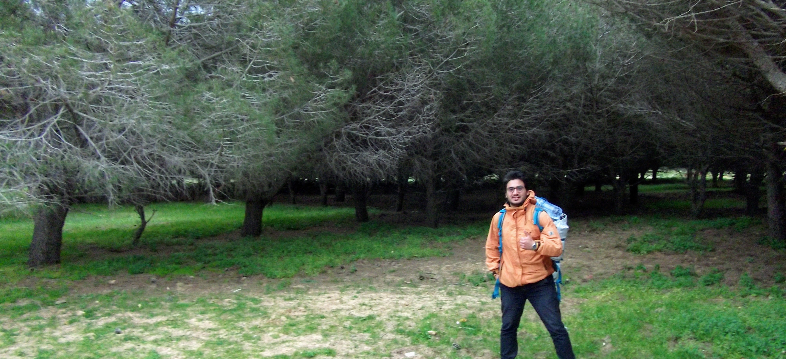

<mat-card style="margin-top: 3em">
  <mat-card-content style="margin: 0 0 0 1.5em">
    <mat-grid-list cols="12" rowHeight="500px" style="margin-bottom: 0.64em">
      <mat-grid-tile colspan="1"></mat-grid-tile>
      <mat-grid-tile colspan="7">
        <div>
          <div class="mat-display-1">
            <b>About me</b>
          </div>
          <div class="mat-h1">
            I'm Omar Fendri, a software engineer.
            I'm currently focusing on full-stack, scalable web application development.
          </div>
          <div class="mat-h1">
            I enjoy writing & reading code as a craft. I'm interested in Systems Design,<br> Artificial Intelligence,
            Healthcare and Education.
          </div>
        </div>
      </mat-grid-tile>
      <mat-grid-tile colspan="4">
        <app-download-resume-btn></app-download-resume-btn>
      </mat-grid-tile>
      <mat-grid-tile colspan="12">
        
      </mat-grid-tile>
      <mat-grid-tile colspan="12">
        <div class="mat-body" style="font-size: large; padding: 0 10em 0 10em">
          Right now, I'm working remotely as part of R&D team working on the design and development of an ERP solution for
          Private Equity firms. My main role is full-stack web developer. I'm responsible of the design and the development of various modules.
<!--          <br>My first job was in 2011. I was a magician, I performed magic tricks on the stage and at private parties. This experience led me to get deeper-->
<!--          into psychology and human-behavior.<br>-->
<!--          ...(to be continued)-->
        </div>
      </mat-grid-tile>

    </mat-grid-list>
  </mat-card-content>

</mat-card>
